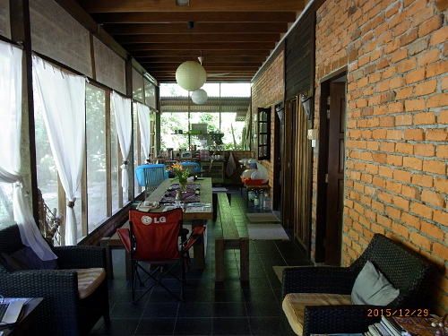
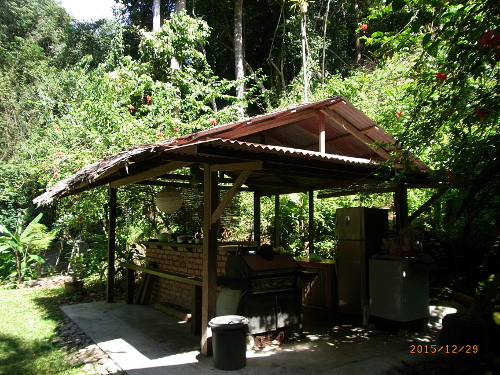
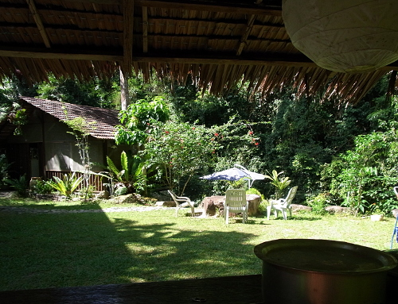
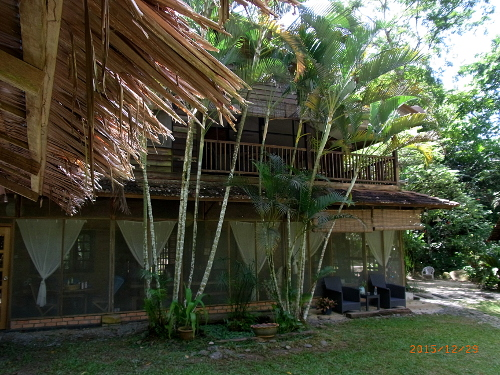
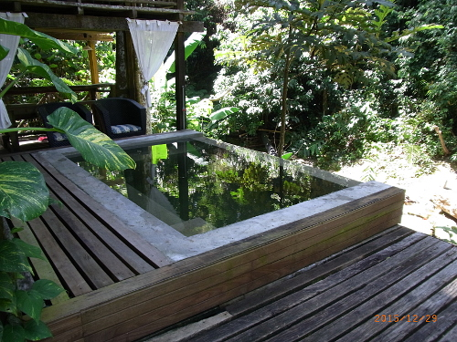
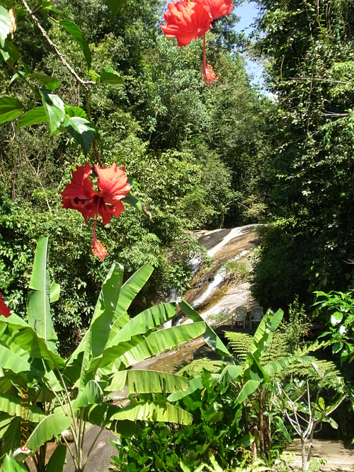

-------------------------------------------
Took the ferry back to Butterworth. That ferry terminal is co-located with the bus station and the train station, a really friendly combination for travellers. The Tourist Information Center in George Town had told me TransNational buses would take me to Merbok in 45 minutes, so I waited in line at the TransNational counter. After 15 minutes, the clerk told me to go to a different counter. Sure enough, there was another TransNational counter, but that clerk could only sell me a ticket for Sungai Petani. He said transfer there for Merbok. Arrived in Sungai Petani about noon, but this is Sunday, and little is happening. After weighing my options, decided taking a taxi to Merbok was the prudent path to follow. (Found out later that this is the old bus station; the new bus station has better connections, and is located near the new train station.)
-------------------------------------------
| Kedah State is not a popular tourist destination, but it should be. Merbok is the central town of the Bujang valley of this state, and is probably the location where both Buddhism and the Hindu culture first entered and flourished in South East Asia. Before the Temples at Anchor in Cambodia. Before Borobudur and Prambanan in Indonesia. Before these cultures spread throughout Thailand, Vietnam, and Laos, (let alone significant portions of China, Japan, and Korea). For more on this, see the Special Topic section 7th thru 14th c. S.E.Asian Civilizations. | |
| But I have an additional reason for travelling to Merbok. My friend Steven Lee grew up in this town. He is the one who first told me about the historical importance of the area, and built his "Waterfall home" near the Bujang Valley Archaeological Museum. Steven has helped remodel the family home into a Lee Family memorial, which is where the photo of the 102 generation family tree was taken. Living area, Waterfall Home |
 |
| Steven and I met in 2006/7 while travelling in Sabah, Borneo, soon after he retired. His home is at the end of a dirt path running through private property, so he does not worry about traffic. The site is in a small valley, surrounded by a variety of majestic trees on three sides. It is a beautiful setting; The sound of rushing water adds to the ambiance. Outdoor Kitchen. |
 |
| The structure on the left is cantilevered somewhat over the stream, with a large screened-in lounging area. Beneath it and out of the direct sun's rays is the new soaking tub. The kitchen structure is covered with galvanized corrugated metal, and nipa over that to keep the hot sun off the durable metal roof. View from Kitchen. |
 |
| When not travelling, he finds time to expand and improve his waterfall home. Since my last visit, he designed and built a second story to the house, including master bedroom and second full bath. Second Story. |
 |
| Steven's most recent project is an un-heated soaking tub, which uses flowing water from the stream. For algae control, the pool must be emptied occasionally, and the concrete sides pressure washed. Anyone have an environmentally friendly suggestion as to how to minimize algae growth? Soaking Tub. |
 |
| Oops, almost forgot to include a photo of the waterfall. The entire property is just one gorgeous setting.
Waterfall. |
 |
Travelling to Malaysia? Would you like to communicate with Steven Lee? Contact him at the Hotmail.com address StevenLee94
Babu Bill
Question? Contact me at the Juno.com address Dancer2SEAsia.
Have a nice day!
Special Topics: